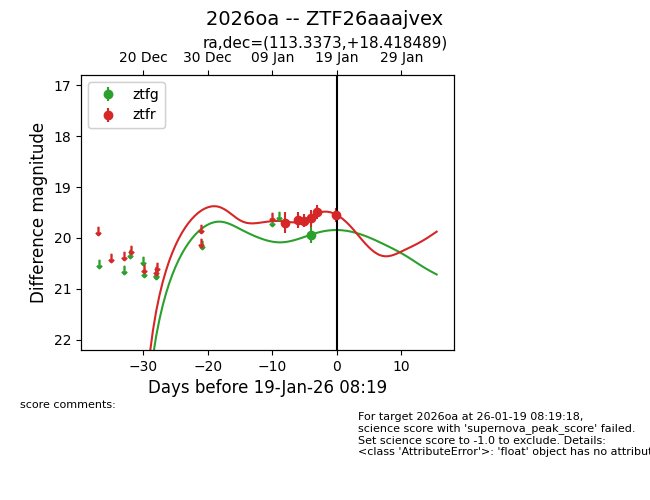
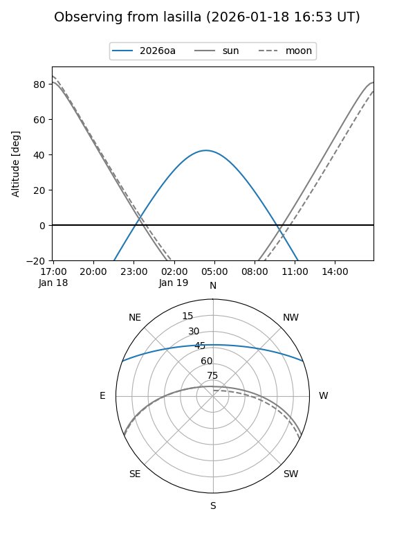
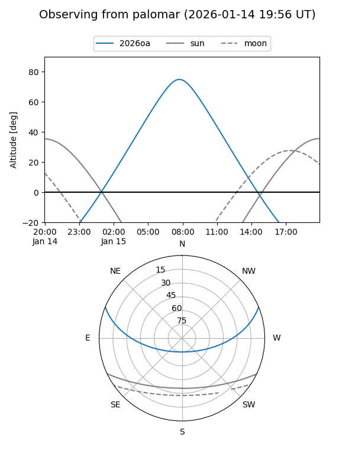
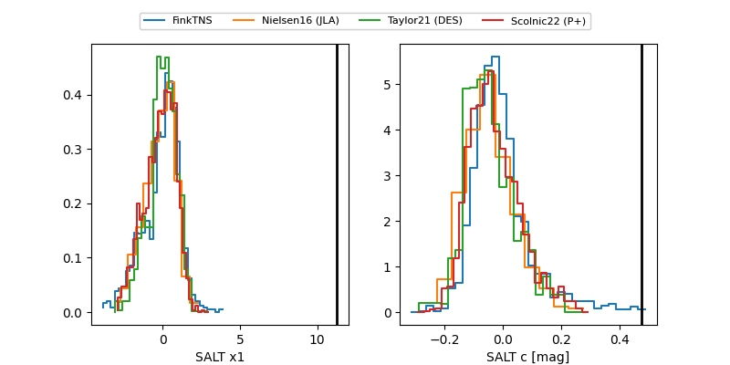

2026oa
Target 2026oa at 2026-01-15 11:55
Aliases and brokers:
FINK: link
Lasair: link
ALeRCE: link
TNS: link
YSE: link
alt names
ZTF26aaajvex (ztf,fink_ztf)
2026oa (tns,yse)
Coordinates:
equatorial (ra, dec) = 113.3373,+18.41849
equatorial (HMS+DMS) = 07:33:20.94,+18:25:06.56
galactic (l, b) = (200.6844,+17.31517)
Flags:
Photometry:
last ztfg=19.93, ztfr=19.62
1 ztfg, 4 ztfr detections
Lightcurve

Visibility


Additional plots
